Phần I: Tâm Lý Học Khoảng Trống Giữa Hai Điểm Số & Hệ Thống Ba Chữ R
Khám phá chân lý cốt tử của quần vợt đỉnh cao từ Tiến sĩ Karl Slaikeu và tay vợt ATP Robert Trogolo: Trận đấu được định đoạt khi quả bóng dừng lăn
1. Chân Lý Cốt Tử: Những Gì Xảy Ra Khi Quả Bóng Không Lăn
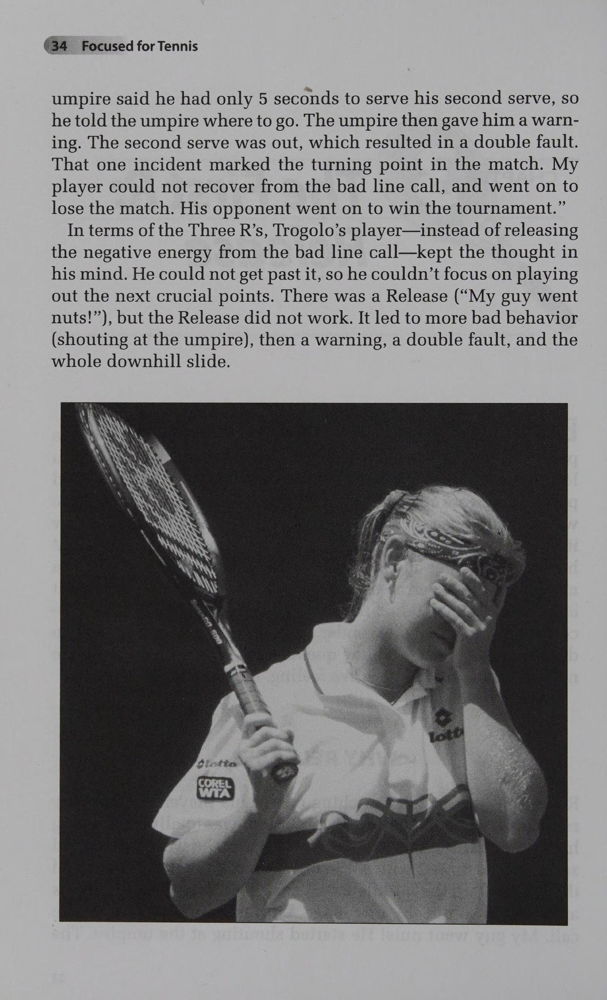
[English: The 16-Second Between-Points Recovery & Mental Transition Routine]
Trong một trận đấu quần vợt tiêu chuẩn kéo dài hai tiếng đồng hồ, tổng thời gian quả bóng thực sự bay qua lại trên lưới chỉ vỏn vẹn khoảng hai mươi đến hai mươi lăm phút.
Điều đó đồng nghĩa với việc gần một trăm phút còn lại là những khoảng trống tĩnh lặng khi bạn bước đi nhặt bóng, đứng chờ đối thủ giao bóng hoặc ngồi trên băng ghế nghỉ đổi sân.
Đa số người chơi nghiệp dư dành toàn bộ tâm trí và tiền bạc để rèn luyện cú thuận tay hay trái tay trong hai mươi phút bóng lăn, nhưng lại hoàn toàn phó mặc một trăm phút khoảng trống tâm lý cho sự may rủi.
Họ để cho sự thất vọng, tức giận, tiếc nuối và nỗi sợ hãi xâm lấn tâm trí sau mỗi pha bóng hỏng.
Tiến sĩ Karl Slaikeu — một chuyên gia tâm lý học lâm sàng hàng đầu về can thiệp khủng hoảng — cùng Robert Trogolo — cựu tay vợt chuyên nghiệp ATP Tour — khẳng định rằng:
Sự khác biệt giữa một vận động viên thường xuyên tự hủy hoại bản thân và một nhà vô địch bản lĩnh thép không nằm ở độ đẹp mắt của cú đánh; sự khác biệt cốt tử nằm ở những gì họ suy nghĩ và hành động trong khoảng thời gian quả bóng dừng bay.
2. Tổng Quan Hệ Thống Ba Chữ R (The Three Rs System in a Nutshell)
Để kiểm soát tuyệt đối khoảng thời gian vàng giữa hai điểm số, Slaikeu và Trogolo đã sáng tạo nên "Hệ thống Ba chữ R" (The Three Rs System) — công cụ tâm lý học thực chiến kinh điển được áp dụng rộng rãi tại các học viện quần vợt hàng đầu thế giới.
Ba chữ R đại diện cho một chu trình tâm lý khép kín gồm ba giai đoạn kế tiếp nhau một cách tự nhiên:
Chữ R thứ nhất — Release (Giải Phóng): Ngay khi pha bóng kết thúc, người chơi lập tức kích hoạt hành vi xả bỏ toàn bộ cảm xúc tiêu cực, sự tức giận và căng thẳng thể xác, rũ bỏ hoàn toàn pha bóng vừa qua khỏi tâm trí.
Chữ R thứ hai — Review (Đánh Giá): Bước đi chậm rãi về phía sau vạch cuối sân, người chơi thực hiện một cuộc kiểm tra khách quan không cảm tính về mặt chiến thuật: Điều gì vừa xảy ra? Đối thủ đã khai thác điểm yếu nào của mình? Kế hoạch cho điểm số tiếp theo là gì?
Chữ R thứ ba — Reset (Tái Thiết Lập): Trước khi bước vào vị trí nhận bóng hoặc giao bóng, người chơi kích hoạt một chuỗi nghi thức hành vi chuẩn hóa (Routine) để đưa nhịp tim, hơi thở và tâm trí trở về trạng thái tập trung cao độ, sẵn sàng đón nhận thử thách mới với sự tự tin trọn vẹn.
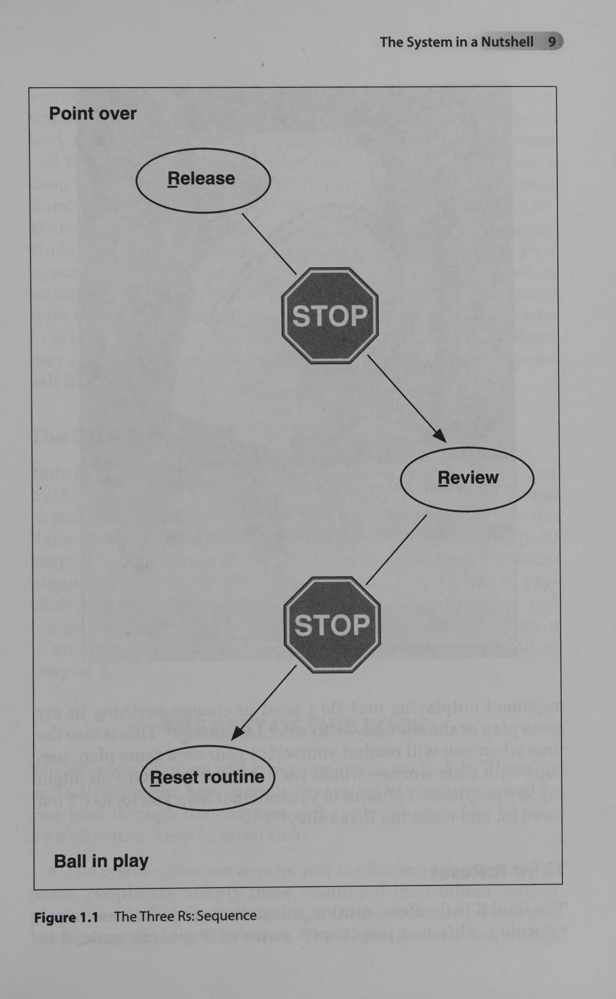
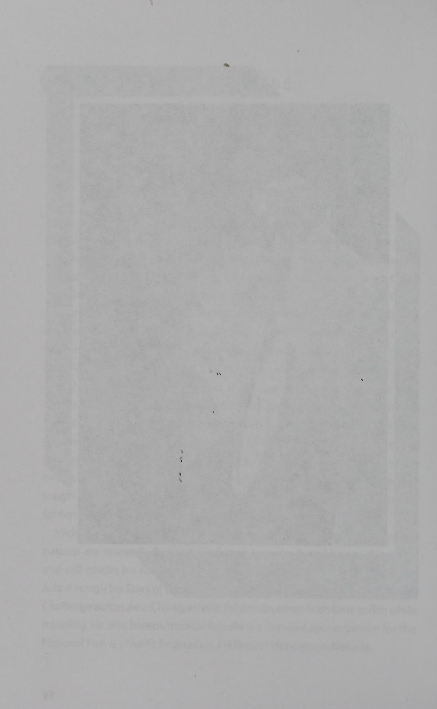
Phần II: Chữ R Thứ Nhất — Giải Phóng Cảm Xúc Tiêu Cực (The First R: Release)
Nghệ thuật dập tắt sự phẫn nộ tức thì, các neo hành vi giải tỏa cơ bắp và phương pháp ngắt mạch tự dằn vặt sau cú đánh hỏng
3. Cơ Chế Sinh Học Của Cơn Giận Dữ & Nhu Cầu Xả Áp Lực
Khi bạn vừa bỏ lỡ một cú đập bóng dễ dàng ngay sát mép lưới, cơ thể bạn sẽ trải qua một phản ứng sinh hóa dữ dội trong tích tắc.
Hạch hạnh nhân trong não bộ lập tức kích hoạt hoóc-môn cortisol và adrenaline tràn ngập huyết quản.
Mạch máu co thắt, quai hàm nghiến chặt, đôi vai gồng cứng và một luồng năng lượng phẫn nộ dâng trào muốn đập nát cây vợt hoặc quát tháo bản thân.
Tiến sĩ Slaikeu cảnh báo rằng nếu bạn cố gắng đè nén cơn giận này một cách giả tạo bằng cách "cắn răng chịu đựng", năng lượng tiêu cực sẽ bị giam giữ lại trong các bó cơ, làm đông cứng đôi tay và phá hủy hoàn toàn cảm giác bóng ở các pha tiếp theo.
Ngược lại, nếu bạn để cơn giận bùng phát mất kiểm soát (như đập vợt, chửi thề hay cãi nhau với trọng tài), bạn sẽ tiếp thêm oxy và sự hưng phấn cho đối thủ bên kia lưới.
Chữ R thứ nhất — Release — chính là chiếc van an toàn giúp bạn xả sạch năng lượng tiêu cực này chỉ trong vòng bốn đến sáu giây đầu tiên sau khi pha bóng kết thúc mà không gây tổn hại đến trận đấu.
4. Kỹ Thuật Neo Hành Vi Xả Áp (The Physical Release Anchor)
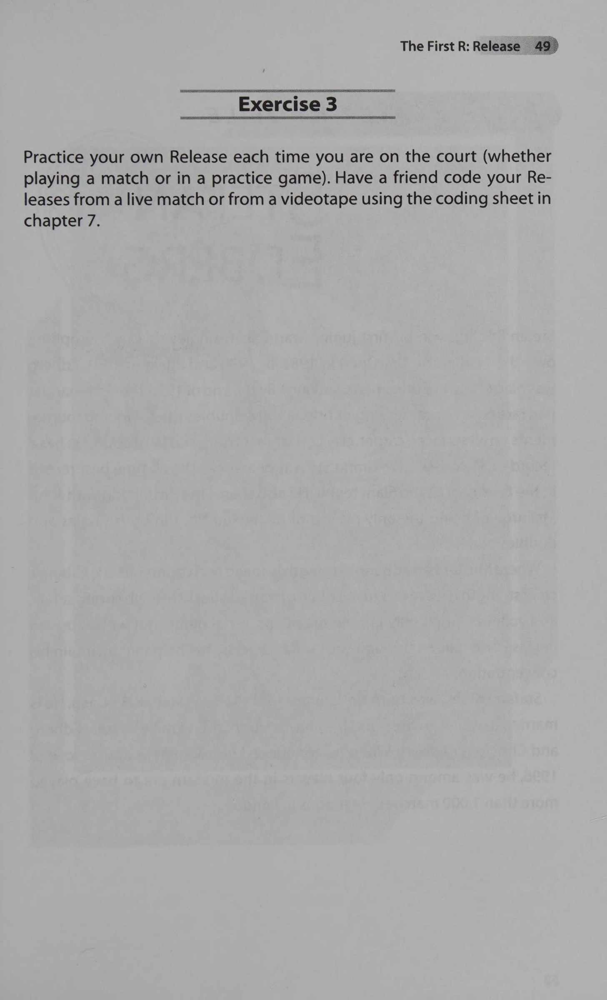
[English: The First R: Physical & Mental Release Routine Execution]
Để giải phóng cảm xúc tiêu cực hiệu quả, người chơi cần xây dựng một chuỗi hành động thể chất mang tính phản xạ có điều kiện:
Hành động một, Quay lưng về phía lưới ngay lập tức: Ngay khi quả bóng bay ra ngoài sân, hãy xoay người một trăm tám mươi độ bước về phía bức tường chắn sau sân. Hành động này giúp bạn cắt đứt hoàn toàn tầm nhìn đối kháng với đối thủ và khán giả, tạo ra một không gian riêng tư tức thời để tự làm dịu tâm trí.
Hành động hai, Chuyển vợt sang tay không thuận và chỉnh dây cước: Cầm chặt cổ vợt bằng tay không thuận để cánh tay thuận được buông lỏng hoàn toàn. Mắt nhìn chăm chú vào mặt vợt và dùng các đầu ngón tay nắn lại từng sợi cước. Chuyển động cơ học lặp đi lặp lại này giúp kéo tâm trí lý tính rời xa khỏi cảm xúc tức giận vừa rồi.
Hành động ba, Thở xả khí cơ hoành: Hít một hơi thật sâu bằng mũi rồi thở phì một hơi dứt khoát qua miệng, đồng thời nhún nhẹ hai vai xuống. Cảm nhận toàn bộ sự căng cứng ở cổ, vai và lưng được cuốn trôi ra khỏi cơ thể theo luồng không khí thở ra.
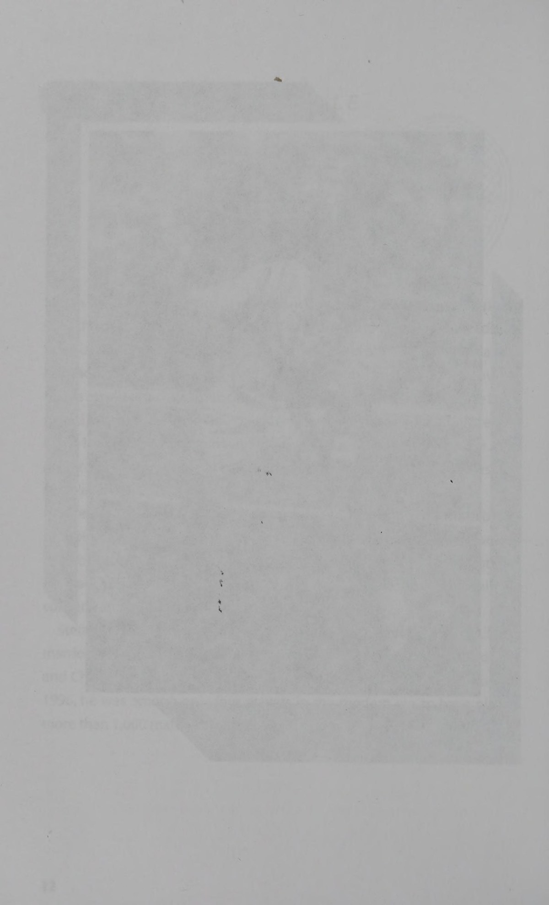
Phần III: Chữ R Thứ Hai & Thứ Ba — Đánh Giá Khách Quan & Tái Thiết Lập Nghi Thức
Phân biệt lỗi kỹ thuật và sai lầm chiến thuật, nghệ thuật đọc trận đấu và quy trình xây dựng nghi thức Reset vững như bàn thạch
5. Chữ R Thứ Hai: Đánh Giá Chiến Thuật Khách Quan (The Second R: Review)
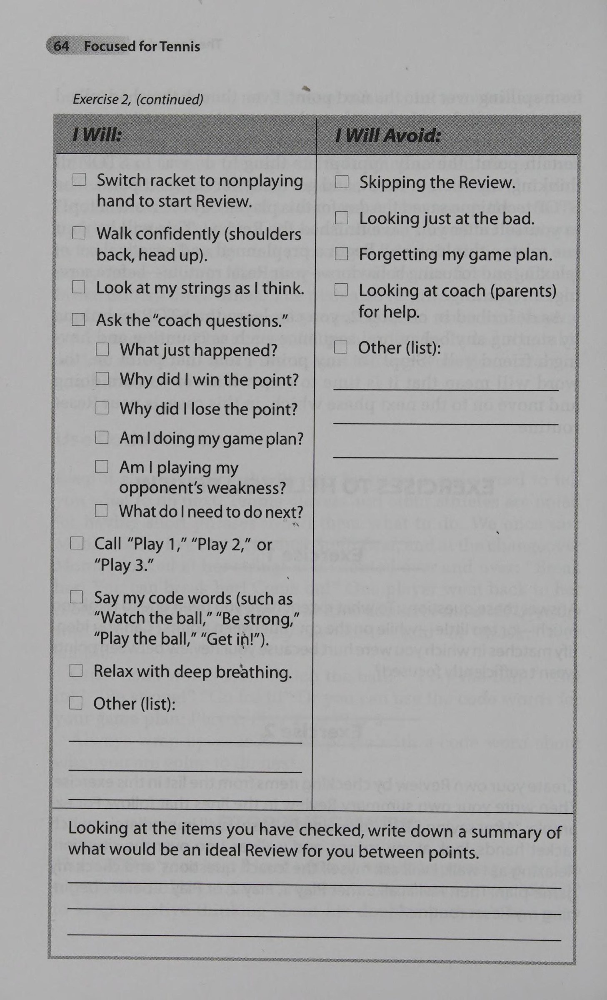
[English: The Second R: Objective Tactical Review & Strategic Adjustment]
Sau khi đã xả sạch cảm xúc tiêu cực ở bước Release, người chơi bước vào giai đoạn Review trong khoảng thời gian từ giây thứ bảy đến giây thứ mười hai.
Mục tiêu duy nhất của Review là thu thập thông tin tình báo chiến thuật một cách khách quan như một nhà khoa học quan sát qua kính hiển vi:
Phân biệt rạch ròi giữa Lỗi Thực Thi và Sai Lầm Chiến Thuật:
Nếu bạn lựa chọn đúng phương án chiến thuật (ví dụ: ép bóng sâu vào góc trái tay yếu của đối thủ) nhưng cú đánh bay ra ngoài vài centimet do điểm tiếp xúc hơi trễ, đó chỉ đơn thuần là một lỗi thực thi kỹ thuật ngẫu nhiên. Bạn không cần phải hoảng loạn hay thay đổi lối chơi; hãy tin tưởng vào vũ khí của mình và tiếp tục kiên trì thực hiện kế hoạch đó.
Ngược lại, nếu bạn cố gắng tung ra một cú thuận tay dứt điểm từ vị trí lùi sâu ba mét sau vạch cuối sân trong khi đối phương đang đứng vững ở giữa sân, đó là một sai lầm nghiêm trọng về mặt chiến thuật. Bạn cần lập tức điều chỉnh: ở pha bóng tương tự tiếp theo, hãy cắt bóng an toàn hoặc lốp bóng bổng để giành lại vị trí cân bằng trước khi nghĩ đến việc tấn công.
Quy tắc vàng của Trogolo: Tuyệt đối không cố gắng sửa đổi kỹ thuật cơ học vung vợt trong lúc trận đấu đang diễn ra. Hãy giữ cho tâm trí thanh thản và chỉ tập trung vào ba biến số chiến thuật đơn giản: Điểm rơi của bóng, Độ cao qua mép lưới và Nhịp độ của pha bóng.
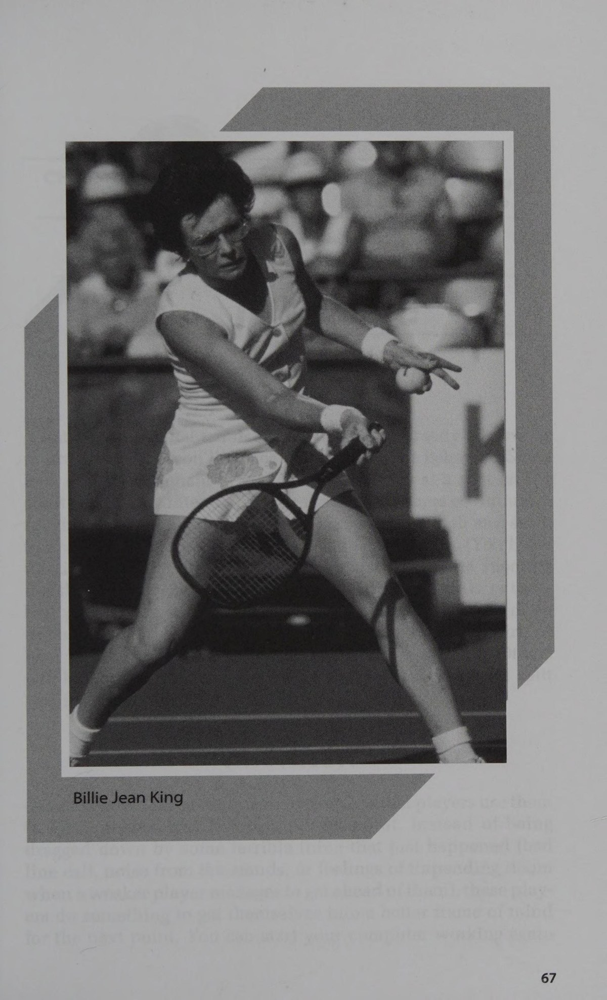
6. Chữ R Thứ Ba: Tái Thiết Lập Nghi Thức Thi Đấu (The Third R: Reset Routine)
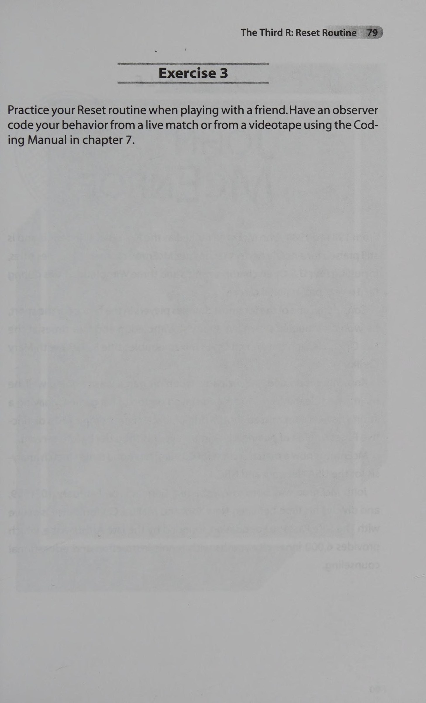
[English: The Third R: Reset Ritual & Focus Re-entry for the Next Point]
Chữ R thứ ba — Reset — diễn ra trong năm đến sáu giây cuối cùng trước khi bóng được đưa vào cuộc.
Đây là thời khắc bạn đóng cánh cửa quá khứ lại và mở toang cánh cửa dẫn vào pha bóng tiếp theo:
Nghi thức của Người Giao Bóng (Server's Routine):
Bước một: Tiến lại gần vạch phát bóng, dừng lại hít một hơi thở định tâm sâu xuống bụng.
Bước hai: Nhìn sang phần sân đối phương, xác định rõ ràng mục tiêu giao bóng (ví dụ: góc chữ T hay xoáy tạt mang ra ngoài biên) và hình dung quỹ đạo bóng bay trong đầu.
Bước ba: Đập bóng xuống đất một số lần cố định (ví dụ: chính xác ba hoặc bốn lần) với nhịp điệu đều đặn. Hành vi lặp đi lặp lại này gửi tín hiệu tới não bộ rằng cơ thể đã hoàn toàn sẵn sàng cho một cú phát bóng uy lực.
Nghi thức của Người Trả Giao Bóng (Receiver's Routine):
Đứng vào tư thế sẵn sàng, nhún nhảy nhẹ hai chân trên các đầu ngón chân, hai mắt dán chặt vào quả bóng trên tay đối thủ, và thực hiện cú bước tách Split-Step nhịp nhàng đúng vào thời điểm mặt vợt đối phương chạm bóng.
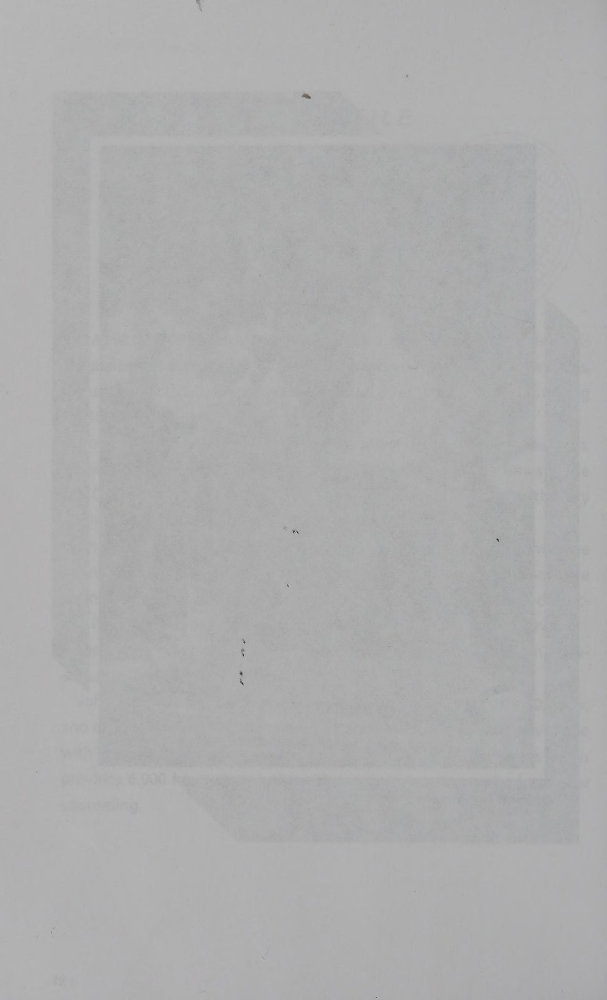
Phần IV: Thực Chiến Đỉnh Cao, Huấn Luyện Có Chủ Đích & Ba Chữ R Trong Cuộc Sống
Bản lĩnh vượt qua các tình huống khủng hoảng điểm số, phương pháp rèn luyện phản xạ tâm lý trên sân tập và ứng dụng nghệ thuật kiểm soát cảm xúc ra ngoài đời sống
7. Thi Đấu Thực Chiến Dưới Áp Lực Nghẹt Thở (Competing with the Three Rs)
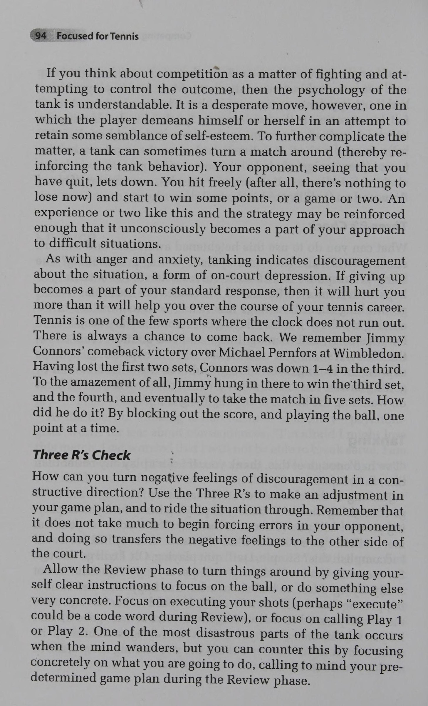
[English: The Optimal Arousal Zone: Inverted-U Theory in Championship Play]
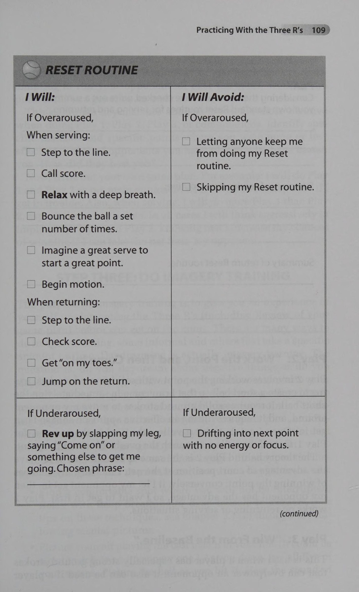
[English: The Comprehensive Three R's Action Matrix for Practice & Matchplay]
Sức mạnh thực sự của Hệ thống Ba chữ R được thử thách rõ ràng nhất trong những khoảnh khắc khủng hoảng cùng cực:
Khi bạn đang bị dẫn trước không-năm ở ván đấu quyết định, hoặc khi đối thủ liên tục ăn gian điểm số và có những lời lẽ khiêu khích vô văn hóa.
Trong những tình huống đó, một người chơi bình thường sẽ rất dễ buông xuôi, thi đấu cẩu thả hoặc nổi cơn tam bành dẫn đến thất bại tủi hổ.
Người nắm vững Ba chữ R sẽ kích hoạt hệ thống phòng thủ tâm lý ngay lập tức:
Thứ nhất, Tách biệt tỷ số trận đấu khỏi từng điểm số hiện tại: Tỷ số không-năm thuộc về quá khứ; nó không thể ngăn cản bạn giành chiến thắng ở điểm số ba mươi giây tiếp theo. Hãy áp dụng chữ R thứ nhất để xả sạch cảm giác hoảng loạn.
Thứ hai, Thu hẹp tiêu điểm chú ý: Đừng nghĩ về viễn cảnh bị thua trận hay những lời bàn tán sau trận đấu. Hãy tập trung toàn bộ tâm trí vào chữ R thứ hai để tìm ra một kẽ hở chiến thuật nhỏ nhất của đối thủ (ví dụ: đối thủ đang mệt mỏi ở các bước di chuyển sang góc thuận tay).
Thứ ba, Tận hưởng cuộc chiến quả cảm: Khi bạn bước vào chữ R thứ ba với nghi thức Reset kiên định, đối thủ bên kia lưới sẽ cảm nhận được nguồn năng lượng bất khuất từ bạn. Sự kiên cường lì lợm đó thường khiến đối phương hoang mang và mở màn cho những cuộc lội ngược dòng vĩ đại bậc nhất lịch sử.
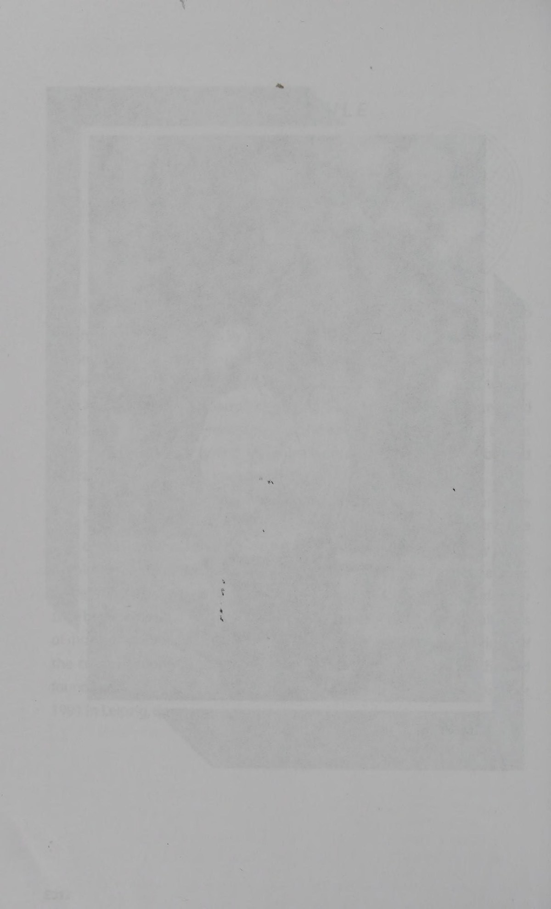
8. Tích Hợp Ba Chữ R Vào Các Buổi Tập & Ứng Dụng Trong Cuộc Sống
Một trong những sai lầm phổ biến nhất của các huấn luyện viên là chỉ dạy kỹ năng tâm lý trên giảng đường lý thuyết mà không đưa vào sân tập hàng ngày.
Slaikeu và Trogolo yêu cầu học viên phải thực hành Hệ thống Ba chữ R trong từng buổi tập đánh bóng:
Sau mỗi loạt bóng hỏng trong bài tập giỏ bóng, học viên phải dừng lại ba giây để thực hiện nghi thức Release (chỉnh dây cước, thở sâu) trước khi yêu cầu huấn luyện viên ném quả bóng tiếp theo.
Việc lặp đi lặp lại hàng ngàn lần này sẽ biến chu trình Ba chữ R thành một phản xạ sinh lý vô điều kiện, tự động vận hành trơn tru khi bước vào đấu trường rực lửa.
Ý nghĩa vượt thời gian của công trình:
Quần vợt, suy cho cùng, chính là bức tranh thu nhỏ sống động của hành trình nhân sinh.
Trong công việc và cuộc sống hàng ngày, chúng ta liên tục phải đối mặt với những thất bại bất ngờ, những dự án đổ vỡ hay những cuộc xung đột căng thẳng.
Bằng cách áp dụng Hệ thống Ba chữ R — Giải phóng cảm xúc tức giận (Release), Đánh giá nguyên nhân khách quan để tìm giải pháp (Review), và Tái thiết lập năng lượng hành động tích cực (Reset) — bạn sẽ trở thành một con người điềm đạm, bản lĩnh và bất khả chiến bại trước mọi bão giông của cuộc đời.